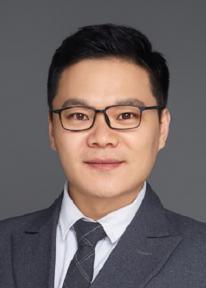

|  | Ph.D, Professor, IDAM Group |
Xiuyi Jia is currently a full professor of Nanjing University of Science and Technology (NJUST). He received the Ph.D degree in computer science and technology from Nanjing University in 2011. He has published more than 100 journal articles and conference papers, such as TPAMI, TKDE, TNNLS, NeurIPS, CVPR, ICCV, AAAI, IJCAI, etc. His research interests include machine learnig, computer vision and data mining.
2023/12/14: One paper about medical image processing is accepted by ICASSP'24.
2023/12/09: Two papers (about LDL and multi-view clustering, respectively) are accepted by AAAI'24.
2023/10/25: Yunan is awarded the national scholarship (30K RMB), congratulations.
2023/10/10: One paper about UHD iamge dehazing is accepted by TII.
2023/09/17: Di's paper about multi-exposure image fusion is accepted by TETCI, congratulations.
2023/09/01: We have four new students this year. Welcome Qimeng, Tianhan, Zihao, Jingying to IDAM group.
2023/08/14: One paper about multi-view clustering is accepted by TNNLS.
2023/08/14: Yunan's paper about label enhancement is accepted by Machine Learning, congratulations.
2023/07/23: Our paper gets Best Poster Award from CICAI'23.
2023/07/22: Yunan's paper about label distribution learning is accepted by TPAMI, congratulations.
2023/07/13: Di's paper about image restoration is accepted by CICAI'23, congratulations.
2023/07/09: One paper about Transformer-based removable partial dentures design is accepted by JBHI.
2023/06/21: Zhuoran's paper about image restoration for UAV is accepted by IROS'23, congratulations.
2023/04/20: Yunan's paper about label enhancement is accepted by IJCAI'23, congratulations.
2023/03/25: One paper about cross-modal hashing is accepted by TNNLS.
2023/03/13: One paper about label distribution learning is accepted by TNNLS.
2023/02/14: One paper about cross-modal retrieval is accepted by TMM.
2022/12/24: One paper about multi-view clustering is accepted by TNNLS.
2022/11/19: Yunan's paper about label enhancement is accepted by AAAI'23, congratulations.
2022/10/11: Qiaowanni is awarded the national scholarship (20K RMB), congratulations.
2022/09/16: Wen's paper about UHD underwater image enhancement is accepted by ACCV'22, congratulations.
2022/09/15: Yunan's paper about label distribution learning is accepted by NeurIPS'22, congratulations.
2022/09/02: We have four new students this year. Welcome Yinsong, Liang, Feiyuan, Weiyi to IDAM group.
2022/07/12: Qiaowanni's paper about UHD low-light image enhancement is accepted by Information Sciences, congratulations.
2022/01/17: Haoyu's paper about 3D dental model completion and reconstruction is accepted by PAKDD'22, congratulations.
2022/01/08: Zigang's paper about 3D dental model segmentation is accepted by ISBI'22, congratulations.
Currently, I am interested in the following research topics.
Label distribution learning / Label enhancement / Multi-label learning
Granular computing / Three-way decisions based learning
Image enhancement / UHD image processing
2016/10-2017/10: School of Medicine, University of North Carolina at Chapel Hill, USA, visting scholar, supervised by Prof. Dinggang Shen.
2005/09-2011/06: Department of Computer Science and Technology, Nanjing University, Ph.D, supervised by Prof. Jiajun Chen and Prof. Lin Shang.
2008/09-2009/09: Department of Computer Science, University of Regina, Cananda, visting student, supervised by Prof. Yiyu Yao.
2001/09-2005/06: College of Computer Science, Chongqing University, B.E.